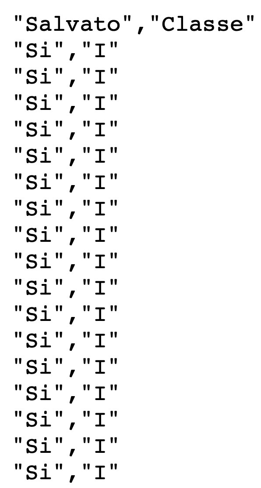

titanic <- read.table("../dataset/titanic.csv", header = TRUE, sep = ",", stringsAsFactors = TRUE)R per l’analisi statistica multivariata
Unità G: analisi descrittiva dei dati titanic
Argomenti affrontati
- Dati qualitativi
- Tabelle di contingenza
- Distribuzioni condizionate
- Indipendenza e indice di connessione \(\chi^2\)
Nota
Gli esercizi R associati sono disponibili a questo link
Descrizione del problema
Dopo il disastro del Titanic, una commissione d’inchiesta del British Board of Trade ha compilato una lista di tutti i 1316 passeggeri includendo le seguenti informazioni:
- l’esito (salvato, non salvato)
- la classe (I, II, III) in cui viaggiavano
- il sesso, l’età, etc.
In questa unità ci limitiamo a considerare le informazioni sull’esito e la classe.
Nota
Ovviamente, si tratta degli stessi dati considerati nell’unità O del corso Statistica I.
I dati grezzi (editor di testo)

Importazione dei dati titanic
Come fatto in precedenza, anzitutto è necessario scaricare il file titanic.csv e salvarlo nel proprio computer. Link al file
In alternativa, possiamo semplice ottenerli usando il link:
path <- "https://tommasorigon.github.io/introR/data/titanic.csv"
titanic <- read.table(path, header = TRUE, sep = ",", stringsAsFactors = TRUE)str(titanic)'data.frame': 1316 obs. of 2 variables:
$ Salvato: Factor w/ 2 levels "No","Si": 2 2 2 2 2 2 2 2 2 2 ...
$ Classe : Factor w/ 3 levels "I","II","III": 1 1 1 1 1 1 1 1 1 1 ...Le frequenze assolute e relative (marginali)
Possiamo ottenere le frequenze assolute (marginali) delle due variabili usando il comando summary:
summary(titanic) Salvato Classe
No:817 I :325
Si:499 II :285
III:706 Ovviamente, possiamo ottenere le frequenze assolute e relative anche usando il comando table. Ad esempio per la variabile classe, possiamo utilizzare:
freq_abs_classe <- table(titanic$Classe)
freq_rel_classe <- freq_abs_classe / sum(freq_abs_classe)
tab_summary <- cbind(freq_abs_classe, freq_rel_classe)
tab_summary freq_abs_classe freq_rel_classe
I 325 0.2469605
II 285 0.2165653
III 706 0.5364742Frequenze congiunte
Una sintesi che possiamo operare consiste nel costruire una tabella, detta tabella di contingenza oppure tabella a doppia entrata.
In R si usa anche in questo caso il comando table, con due argomenti:
tab <- table(titanic$Salvato, titanic$Classe)
tab
I II III
No 122 167 528
Si 203 118 178In questa tabella sono riportate le frequenze congiunte, ad esempio, il valore \(203\) rappresenta il numero di passeggeri che viaggiavano in I classe e che sono sopravvissuti.
Tabella di contingenza
Siano \(x\) ed \(y\) due variabili aventi modalità \(c_1,\dots,c_h\) e \(d_1,\dots,d_k\), rispettivamente.
Una tabella di contingenza (a due variabili) per le coppie di dati \((x_1,y_1),\dots,(x_n,y_n)\) si presenta nella seguente forma:
| Variabile \(y\) | ||||||
|---|---|---|---|---|---|---|
| Variabile \(x\) | \(d_1\) | \(\dots\) | \(d_j\) | \(\dots\) | \(d_k\) | Totale |
| \(c_1\) | \(n_{11}\) | \(\dots\) | \(n_{1j}\) | \(\dots\) | \(n_{1k}\) | \(n_{1+}\) |
| \(\vdots\) | \(\vdots\) | \(\vdots\) | \(\vdots\) | \(\vdots\) | ||
| \(c_i\) | \(n_{i1}\) | \(\dots\) | \(n_{ij}\) | \(\dots\) | \(n_{ik}\) | \(n_{i+}\) |
| \(\vdots\) | \(\vdots\) | \(\vdots\) | \(\vdots\) | \(\vdots\) | ||
| \(c_h\) | \(n_{h1}\) | \(\dots\) | \(n_{hj}\) | \(\dots\) | \(n_{hk}\) | \(n_{h+}\) |
| Totale | \(n_{+1}\) | \(\dots\) | \(n_{+j}\) | \(\dots\) | \(n_{+k}\) | \(n\) |
La frequenza \(n_{ij}\) è il numero di unità statistica che presentano contemporaneamente le modalità \(c_i\) e \(d_j\).
Tabella di contingenza, frequenze relative
Dividendo per \(n\) ciascun termine della precedente tabella, si ottiene inoltre:
| Variabile \(y\) | ||||||
|---|---|---|---|---|---|---|
| Variabile \(x\) | \(d_1\) | \(\dots\) | \(d_j\) | \(\dots\) | \(d_k\) | Totale |
| \(c_1\) | \(f_{11}\) | \(\dots\) | \(f_{1j}\) | \(\dots\) | \(f_{1k}\) | \(f_{1+}\) |
| \(\vdots\) | \(\vdots\) | \(\vdots\) | \(\vdots\) | \(\vdots\) | ||
| \(c_i\) | \(f_{i1}\) | \(\dots\) | \(f_{ij}\) | \(\dots\) | \(f_{ik}\) | \(f_{i+}\) |
| \(\vdots\) | \(\vdots\) | \(\vdots\) | \(\vdots\) | \(\vdots\) | ||
| \(c_h\) | \(f_{h1}\) | \(\dots\) | \(f_{hj}\) | \(\dots\) | \(f_{hk}\) | \(f_{h+}\) |
| Totale | \(f_{+1}\) | \(\dots\) | \(f_{+j}\) | \(\dots\) | \(f_{+k}\) | \(1\) |
La frequenza relativa \(f_{ij} = n_{ij} / n\) è quindi la frazione di osservazioni che presentano contemporaneamente le modalità \(c_i\) e \(d_j\).
Frequenze congiunte & marginali
Le tabelle descritte nei paragrafi precedenti si ottengono in R come segue:
addmargins(tab) # Aggiunge le distribuzioni marginali (assolute)
I II III Sum
No 122 167 528 817
Si 203 118 178 499
Sum 325 285 706 1316tab_rel <- prop.table(tab) # Comando alternativo: table(tab) / sum(tab)
tab_rel
I II III
No 0.09270517 0.12689970 0.40121581
Si 0.15425532 0.08966565 0.13525836addmargins(tab_rel) # Aggiunge le distribuzioni marginali relative
I II III Sum
No 0.09270517 0.12689970 0.40121581 0.62082067
Si 0.15425532 0.08966565 0.13525836 0.37917933
Sum 0.24696049 0.21656535 0.53647416 1.00000000Distribuzioni condizionate I
Distribuzione condizionata \((x \mid y = d_j)\)
La \(j\)-esima colonna mostra la distribuzione di \(x\) condizionata ad \(y = d_j\) oppure, equivalentemente, la distribuzione di \(x\) dato \(y = d_j\).
| Distribuzione \(x \mid y = d_j\) | \(c_1\) | \(\dots\) | \(c_i\) | \(\dots\) | \(c_h\) | Totale |
|---|---|---|---|---|---|---|
| Frequenze assolute | \(n_{1j}\) | \(\dots\) | \(n_{ij}\) | \(\dots\) | \(n_{hj}\) | \(n_{+j}\) |
| Frequenze relative | \(n_{1j} / n_{+j}\) | \(\dots\) | \(n_{ij} / n_{+j}\) | \(\dots\) | \(n_{hj} / n_{+j}\) | \(1\) |
Distribuzione condizionata \((y \mid x = c_i)\)
La \(i\)-esima riga mostra la distribuzione di \(y\) condizionata ad \(x = c_i\) oppure, equivalentemente, la distribuzione di \(y\) dato \(x = c_i\).
| Distribuzione \(y \mid x = c_i\) | \(d_1\) | \(\dots\) | \(d_j\) | \(\dots\) | \(d_k\) | Totale |
|---|---|---|---|---|---|---|
| Frequenze assolute | \(n_{i1}\) | \(\dots\) | \(n_{ij}\) | \(\dots\) | \(n_{ik}\) | \(n_{i+}\) |
| Frequenze relative | \(n_{i1} / n_{i+}\) | \(\dots\) | \(n_{ij} / n_{i+}\) | \(\dots\) | \(n_{ik} / n_{i+}\) | \(1\) |
Distribuzioni condizionate II
Il comando prop.table consente anche di calcolare le frequenze condizionate relative.
La distribuzione di ciascuna classe, condizionata all’esito è:
prop.table(tab, 1)
I II III
No 0.1493268 0.2044064 0.6462668
Si 0.4068136 0.2364729 0.3567134La distribuzione di ciascun esito, condizionata alla classe è:
prop.table(tab, 2)
I II III
No 0.3753846 0.5859649 0.7478754
Si 0.6246154 0.4140351 0.2521246Esercizio di riepilogo
Le contingenze sono pari alla differenza tra frequenze osservate e frequenze attese, sotto l’ipotesi di indipendenza: \[ (\text{contingenza}_{ij}) = n_{ij} - \hat{n}_{ij}, \qquad i=1,\dots,h,\quad j=1,\dots,k. \]
Si consulti l’unità O di Statistica I per la definizione di frequenze attese.
Indice \(\chi^2\) di Pearson
L’indice di connessione \(\chi^2\) è definito come \[ \chi^2 = \sum_{i=1}^h\sum_{j=1}^k \frac{(n_{ij} - \hat{n}_{ij})^2}{\hat{n}_{ij}} = n\left(\sum_{i=1}^h\sum_{j=1}^k\frac{f_{ij}^2}{f_{i+}f_{+j}} - 1\right). \]
Esercizio
Si scriva una funzione R chiamata chi_squared(x, y) che calcola l’indice \(\chi^2\) di Pearson.
Soluzione
chi_squared <- function(x, y) {
nn <- table(x, y)
n <- sum(nn)
ff <- nn / n # Frequenze relative congiunte
f_x <- table(x) / n # Frequenze relative marginali di x
f_y <- table(y) / n # Frequenze relative marginali di y
S <- 0
for (i in 1:length(f_x)) {
for (j in 1:length(f_y)) {
S <- S + ff[i, j]^2 / (f_x[i] * f_y[j])
}
}
n * (S - 1)
}
chi_squared(titanic$Salvato, titanic$Classe) No
133.052 Soluzione (alternativa, più concisa)
La soluzione seguente fa uso delle funzioni apply e outer.
chi_squared <- function(x, y) {
nn <- table(x, y)
n <- sum(nn)
ff <- nn / n
f_x <- apply(ff, 1, sum)
f_y <- apply(ff, 2, sum)
f_e <- outer(f_x, f_y) # Prodotto "esterno" tra vettori
n * (sum(ff^2 / f_e) - 1)
}
chi_squared(titanic$Salvato, titanic$Classe)[1] 133.052Infine, si noti che la funzione chisq.test produce lo stesso risultato.
chisq.test(table(titanic$Salvato, titanic$Classe))
Pearson's Chi-squared test
data: table(titanic$Salvato, titanic$Classe)
X-squared = 133.05, df = 2, p-value < 2.2e-16